0.9.9
Versione 0.9.9 (novembre 2026). ActivityTrack Desktop è l'app per il PC di ActivityTrack. Sta nell'area di notifica, vicino all'orologio, e tiene a un clic le attività in corso e i Da fare. Così un'attività, anche breve, si registra dalla tastiera, senza prendere il telefono.
Senza rete il PC continua a lavorare: le modifiche partono quando la rete torna. Report, anagrafiche e gestionali restano al telefono e al web.
Sul PC ActivityTrack è un'applicazione sola, con tre
interfacce: questa nell'area di notifica, la riga di comando
(activitytrack, pacchetto activitytrack-cli) e
l'interfaccia a schermo intero nel terminale
(activitytrack-tui). Usano gli stessi dati
(~/.local/share/activitytrack, su Windows
%APPDATA%\activitytrack) e la stessa associazione: quello
che si fa con una compare subito nelle altre. Tutte dipendono dalla
libreria python3-activitytrack.
Dalla pagina delle release (https://gitlab.com/activitytrack/activitytrack-desktop/-/releases):
sudo apt install ./python3-activitytrack_<versione>-1-<distro>_all.deb ./activitytrack-desktop_<versione>-1-<distro>_all.deb.
ActivityTrack compare nel menu delle applicazioni.pip install dal suo
repository). Si scompatta
activitytrack-desktop-<versione>.tar.gz e, nella sua
cartella, si avvia python3 -m activitytrack_desktop.ActivityTrackDesktop-<versione>-setup.exe. Si
installa per l'utente corrente, senza diritti di amministratore. Il
programma non è firmato (non ha costi di certificati):
al primo avvio Windows SmartScreen avvisa; si sceglie "Ulteriori
informazioni" → "Esegui comunque". Chi vuole controllare il
file confronta il suo SHA-256 con SHA256SUMS della stessa
release.Su XFCE l'icona compare se il pannello ha l'area di notifica (plugin "Status Tray" o "Notification Area"). GNOME senza l'estensione AppIndicator non ha un'area di notifica: ActivityTrack resta allora aperto in una finestra.
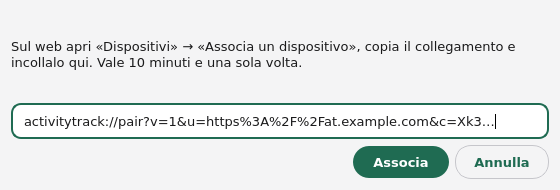
activitytrack://pair.Il collegamento vale 10 minuti e una volta sola. Dopo l'associazione il PC scarica i dati dell'utente e li tiene aggiornati.
Impostazioni → Sincronizzazione mostra server, utente, organizzazione, le modifiche in attesa e quelle rifiutate dal server ("Non sincronizzati"), con "Sincronizza ora", "Associa di nuovo…" e "Dissocia". Dissociando il PC tiene i suoi dati; associandolo a un altro server o utente li riparte da zero.
Il token di accesso sta nel portachiavi del sistema (KWallet, GNOME Keyring, Gestione credenziali di Windows). Senza portachiavi sta in un file leggibile solo dal proprio utente, e la pagina lo dice.
L'icona prende il colore dell'attività in corso: verde al lavoro, gialla in pausa, blu in viaggio, grigia quando non c'è niente. Un punto rosso dice che la sincronizzazione ha un problema (non associato, associazione revocata, versioni incompatibili).
Chiudere la finestra la nasconde soltanto: ActivityTrack resta nell'area di notifica fino a "Esci".
La finestra ha l'aspetto dell'app: a sinistra la barra verde con Home, Da fare e Impostazioni (Ctrl+1, Ctrl+2, Ctrl+3) e, in basso, Sincronizza (F5) con un punto rosso quando la sincronizzazione ha un problema. È chiara o scura come il sistema.
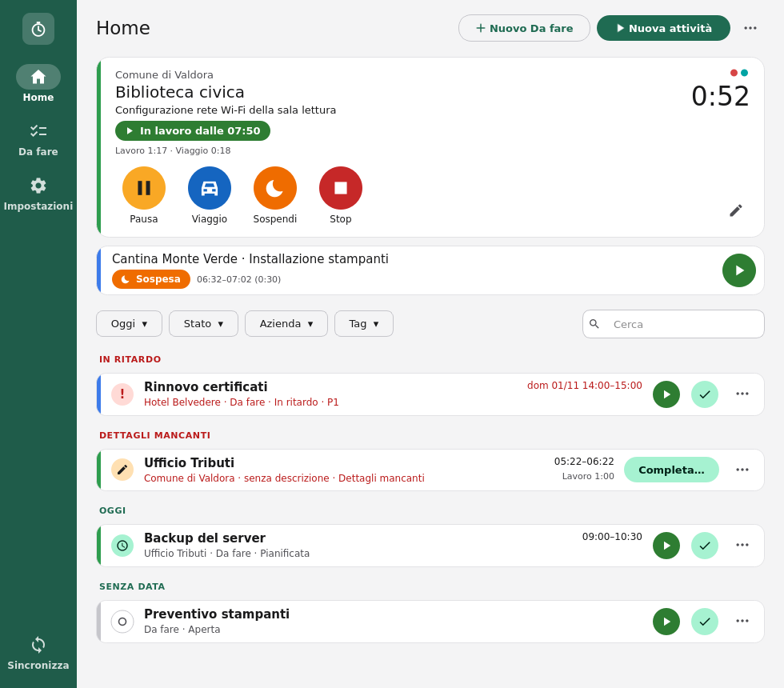
La Home è quella del telefono:
La striscia colorata a sinistra di ogni scheda è il colore dell'azienda (o del cliente) scelto sul web o sul telefono.
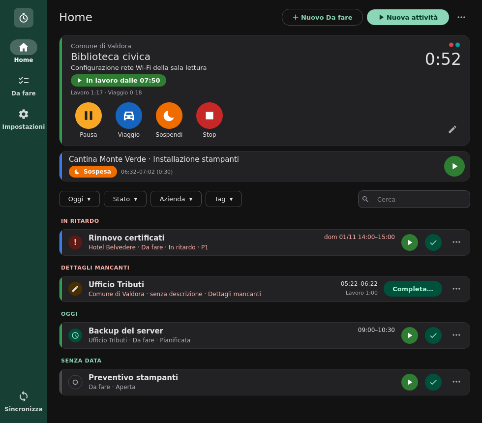
Valgono quando la finestra di ActivityTrack è attiva; i suggerimenti dei pulsanti le ricordano.
| Tasti | Cosa fa |
|---|---|
| Ctrl+N | Nuova attività (inserimento rapido) |
| Ctrl+P | Pausa dell'attività al lavoro o in viaggio; se nessuna lo è, riprende quella in pausa o l'ultima sospesa |
| Ctrl+T | Stop dell'attività della scheda grande; se mancano i dettagli apre "Completa l'attività" |
| Ctrl+D | Nuovo Da fare |
| Ctrl+F | Cerca nella lista |
| Ctrl+1, Ctrl+2, Ctrl+3 | Home, Da fare, Impostazioni |
| F5 | Sincronizza ora |
| Ctrl+Invio | Conferma il modulo aperto |
Con più attività al lavoro insieme (quando la policy lo consente) Ctrl+P chiede quale, in un piccolo elenco: Invio sceglie la prima, la più recente.
Avvio, pausa e stop hanno anche scorciatoie che funzionano da qualunque programma: §10.
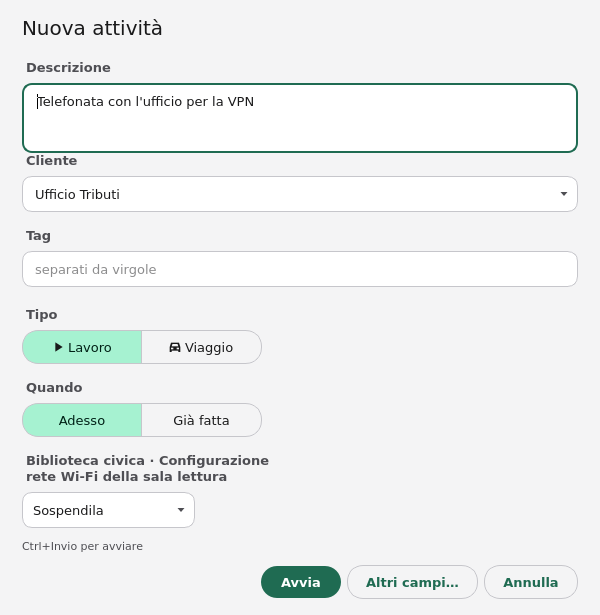
"Nuova attività" (dal menu, dalla Home o con Ctrl+N) apre l'inserimento rapido, sopra le altre finestre:
Ctrl+Invio avvia. "Altri campi…" passa al modulo completo con quanto già scritto.
Il modulo completo si apre anche dal menu ⋯ della Home, "Modulo completo…".
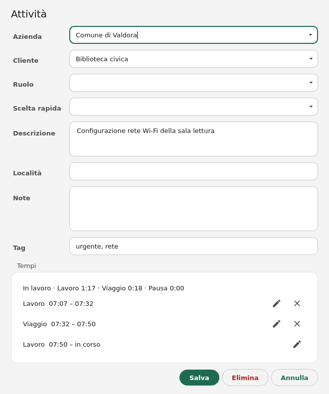
Azienda, cliente, ruolo, scelta rapida, descrizione, località, note e tag, secondo la policy (che può rinominarli, nasconderli o renderli obbligatori). Per un'attività esistente mostra anche i tempi: ogni tratto (lavoro, viaggio, pausa) si può modificare o eliminare, e se ne aggiunge uno nuovo, quando la policy lo permette. Due tratti sovrapposti segnano l'attività "da verificare".
L'azienda viene prima del cliente e ne filtra l'elenco; scegliendo un cliente conosciuto, l'azienda diventa la sua.
Date e orari si scrivono nel formato scelto in Impostazioni → Generale, oppure si scelgono: il calendario dalla freccia del campo e, per gli orari, la griglia a 5 minuti dell'app dal pulsante ▦ accanto al campo. Una riga per ora, 12 ore alla volta (▲ Prima / Dopo ▼ spostano la finestra di 3 ore). Inizio e fine si scelgono insieme: trascinando dalla prima casella all'ultima, oppure cliccando la prima e poi l'ultima, e OK; in alto l'intervallo e la durata, le caselle tratteggiate sono occupate da altre attività di quel giorno. Orario esatto con Usa prende i minuti fuori griglia (es. 09:37).
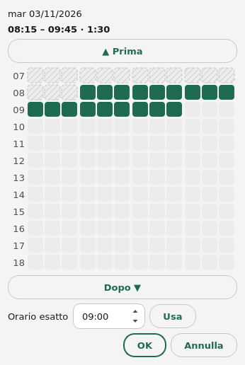
Stop (o Ctrl+T) chiude subito l'attività se ha cliente e descrizione. Altrimenti, o se viene da un Da fare, chiede quello che manca:
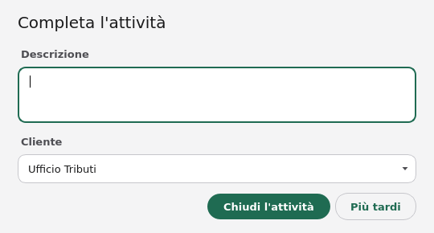
"Chiudi l'attività" la completa (senza descrizione chiede conferma); "Più tardi" la lascia tra i "Dettagli mancanti" della Home.
Sotto le attività in corso la Home ha un'unica lista, come l'app: In ritardo, Dettagli mancanti, Oggi, Prossimi giorni, Giorni precedenti, Senza data, Ignorate. I filtri periodo (Oggi, 24 h, 3 gg…), stato (Da fare, Dettagli mancanti, Fatte, Ignorate), azienda e tag sono pulsanti con il loro menu, colorati quando non sono quelli iniziali, e restano memorizzati; Cerca (Ctrl+F) restringe la lista alle righe che contengono le parole scritte.
Ogni riga ha a sinistra il segno del suo stato: ! in ritardo, l'orologio se pianificata, il cerchio se aperta, la matita se mancano i dettagli, il quadrato se chiusa, la spunta se fatta. Un Da fare ha i pulsanti tondi Avvia (un'attività con i suoi dati) e Fatto e, nel menu ⋯, Posticipa, Ignora e Modifica…; un clic sulla riga lo apre. Un'attività con i dettagli mancanti ha Completa….
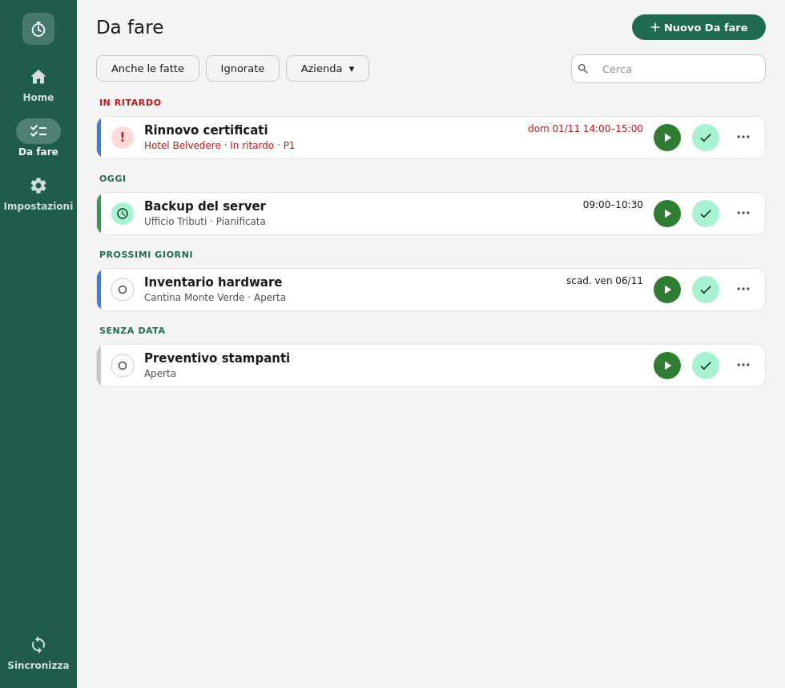
La sezione Da fare (Ctrl+2) li mostra tutti, per scadenza e pianificazione, con "Anche le fatte", Ignorate, l'azienda e la ricerca; "Nuovo Da fare" (o Ctrl+D) ne crea uno.
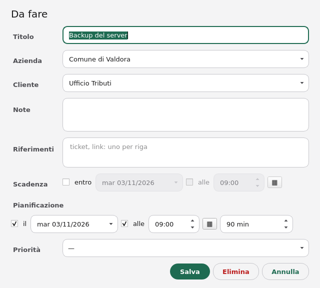
Il modulo ha titolo, azienda, cliente, note, riferimenti (ticket, link: uno per riga), scadenza, pianificazione (giorno, ora, durata) e priorità. Un Da fare del gestionale non si elimina: si ignora.
Gli stessi del telefono, come notifiche del desktop:
Su Linux le notifiche hanno i pulsanti. Su Windows, o dove le notifiche non li hanno, un clic apre la domanda in una finestra:
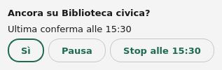
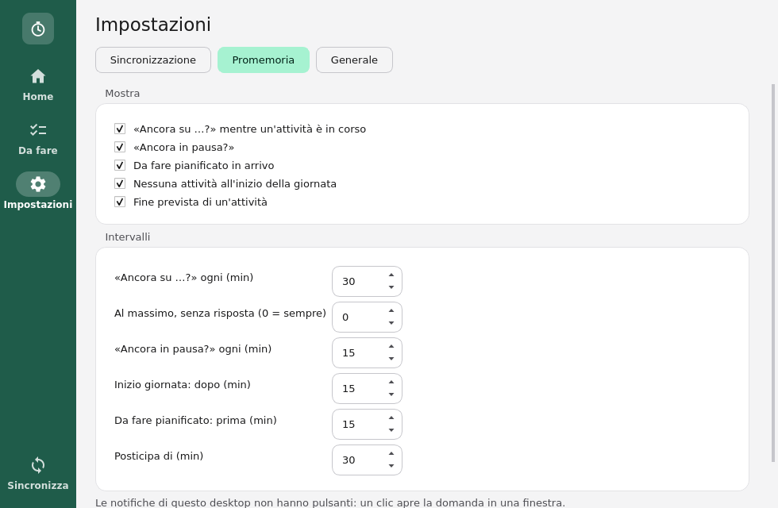
Impostazioni → Promemoria accende o spegne ciascuno e ne regola gli intervalli; quelli fissati dalla policy sono grigi. Il telefono mostra gli stessi promemoria: una risposta che cambia l'attività o il Da fare vale anche sull'altro dispositivo.
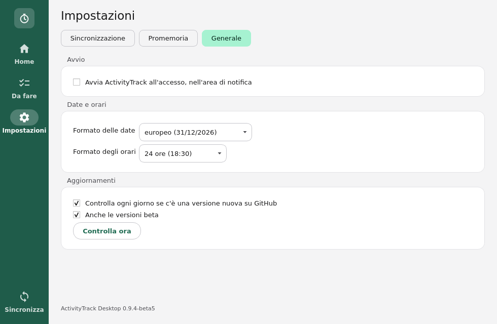
Impostazioni → Generale ha:
apt), la versione
nuova si segnala ma non si scarica: l'aggiorna il
gestore. "Anche le versioni beta" include le versioni
di prova. La policy può fissare entrambe le scelte.Tre combinazioni di tasti funzionano da qualunque programma, anche con la finestra di ActivityTrack chiusa:
| Tasti | Cosa fanno |
|---|---|
| Ctrl+Alt+A | apre in primo piano la finestra della nuova attività |
| Ctrl+Alt+P | mette in pausa l'attività al lavoro o in viaggio (la più recente); se non ce n'è, riprende quella in pausa, altrimenti l'ultima sospesa |
| Ctrl+Alt+S | ferma l'attività in corso; se mancano i dettagli apre in primo piano la scheda per completarla |
Quando le attività candidate sono più d'una (attività contemporanee), una piccola finestra chiede quale. Pausa, ripresa e stop si confermano con una notifica.
In Generale → Scorciatoie globali ciascuna si accende o si spegne e prende altri tasti (servono Ctrl, Alt o Super, tranne per i tasti funzione); "Ripristina predefinite" torna a quelli sopra. La riga sotto dice come funzionano su questo desktop:
python3-xlib, che il pacchetto .deb
installa; chi usa il .tar.gz lo installa dalla
distribuzione;Se un tasto è già preso da un altro programma, la riga lo dice. Dove le scorciatoie non sono disponibili, o per usare tasti propri, si assegna una scorciatoia del desktop a uno di questi comandi:
activitytrack-desktop --start # nuova attività
activitytrack-desktop --pause # pausa o ripresa
activitytrack-desktop --stop # stopIl comando passa all'ActivityTrack già aperto; se non è aperto lo
avvia nell'area di notifica ed esegue il comando. Su Windows il
programma è ActivityTrack.exe nella cartella
d'installazione (%LOCALAPPDATA%\Programs\ActivityTrack),
con le stesse opzioni.
Il PC riceve la stessa policy del telefono e applica le chiavi che lo riguardano: funzioni (attività, viaggi, Da fare, pianificazione, ignorare ed eliminare), campi (nomi, obbligatori, nascosti, sola lettura), tempi modificabili, tag liberi, attività solo dai Da fare, anagrafiche solo centrali, intervalli dei promemoria, aggiornamenti. Le chiavi solo del telefono (posizione, chiamate, widget…) non lo riguardano.
| Problema | Cosa fare |
|---|---|
| Una scorciatoia non funziona | Leggi la riga sotto Scorciatoie globali in
Generale: il tasto può essere preso da un altro
programma, o mancare python3-xlib (X11). In alternativa
assegna activitytrack-desktop --pause (o
--start, --stop) a un tasto nelle impostazioni
del desktop |
| L'icona non si vede | XFCE: aggiungi al pannello l'area di notifica. GNOME: serve l'estensione AppIndicator |
| Windows: "Windows ha protetto il PC" | Il programma non è firmato: "Ulteriori informazioni" → "Esegui comunque" |
| "Codice scaduto o già usato" | Il collegamento vale 10 minuti e una volta: creane un altro sul web |
| "Il certificato del server non è valido" | Il server ha un certificato autofirmato: usa il collegamento appena creato, che contiene la sua chiave |
| "Il server ha revocato l'associazione" | Associa di nuovo il PC dal web: i dati restano |
| "Il server non accetta più questa versione" | Aggiorna ActivityTrack Desktop (Impostazioni → Generale, "Controlla ora") |
| "Va aggiornato il server" | Avvisa l'amministratore di ActivityTrack Web |
| Un'attività fatta sul telefono non compare | Arriva entro 30 secondi; F5 ("Sincronizza") la porta subito |